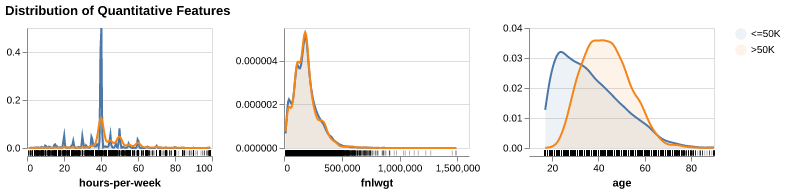
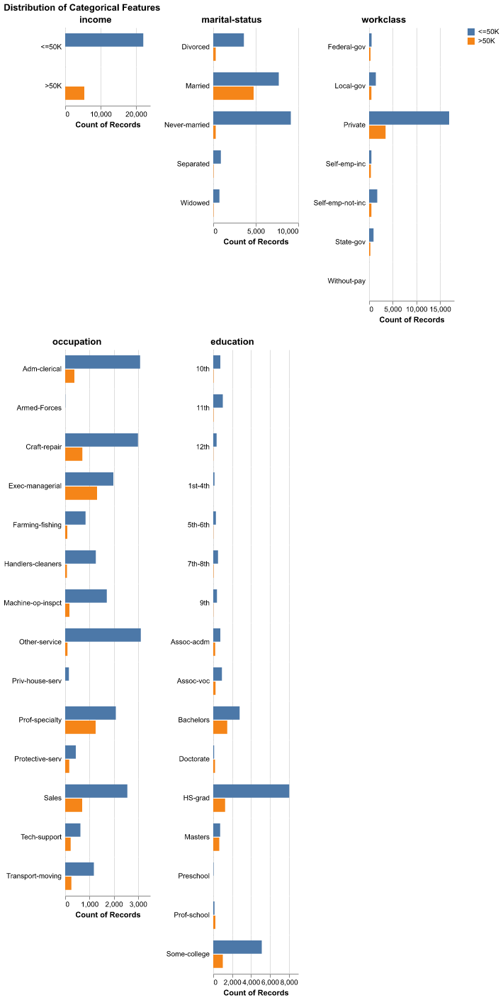
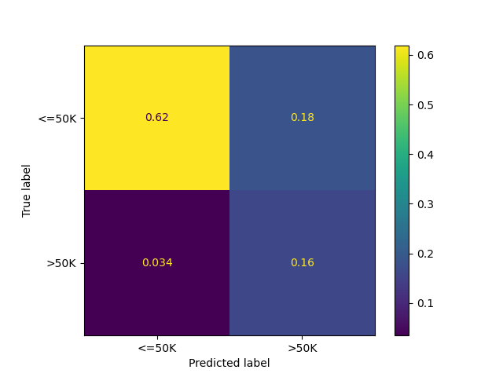
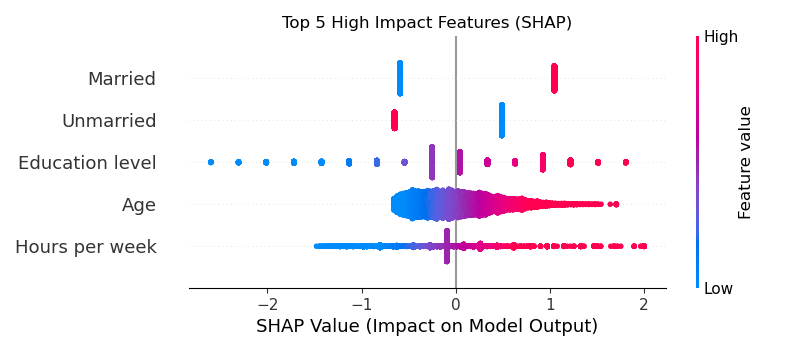

| Features | |
|---|---|
| 0 | age |
| 1 | workclass |
| 2 | fnlwgt |
| 3 | education |
| 4 | education-num |
| 5 | marital-status |
| 6 | occupation |
| 7 | relationship |
| 8 | race |
| 9 | sex |
| 10 | capital-gain |
| 11 | capital-loss |
| 12 | hours-per-week |
| 13 | native-country |
| 14 | income |
| 15 | income_encoded |
Predicting Income Category From Socioeconomic Characteristics
Executive Summary
Our team set out to infer what socioeconomic factors contribute most to an individual’s wealth. With our analysis and model, we envision this data being used by government and NGOs in determining what social investments can be made to improve people’s lives.
To accomplish this, we built a classification model to predict an individual’s income group, split by whether they are high earners (> USD 50,000) or low earners (<= USD 50,000). Using a Logistic Regression classifier, our model accuracy was 78.0% on unseen test data with an associated F1 score of 0.72. To address the class imbalance in the data, we used a balanced weight approach while building our model. We also sought to understand what socioeconomic characteristics play a the biggest role in determining an individual’s income group. Using SHAP analysis, our findings show that of the features in our model, Marital Status, Age & Education are the biggest drivers of a High Income output.
While the Logistic Regression classifier was chosen to easier identify the socioeconomic features that are drivers of high income, we see an opportunity to use an ensemble model such as Random Forest Classification to improve the model’s prediction metrics. We also note the limitation of our findings that the strongest economic indicators for wealth are limited only to the features that were available to us in the dataset. There presents an opportunity to further explore what other indicators are stronger predictors through addition of more features, or feature engineering of the present features with a subject matter expert.
Introduction
How is an individual’s income affected by other socioeconomic factors? This is the question our team set out to investigate. Socioeconomic status here is defined as a way of describing people based on their education, income and type of job (National Cancer Institute (2025)). With the diversity of backgrounds that can exist in society, we set out to understand what factors contribute most to an individual’s income.
In this analysis, we use machine learning to predict whether an individual’s income is above or below $50,000. As the government sets out massive investment in Canadian societies to improve the lives of citizens(Housing, Infrastructure and Communities Canada (2025)), we envision our analysis as a means of providing insights to the government as to what investments can drive the best chances of improving an individual’s life. The persistent income and wealth inequality increase presents a strong case for prudent investing to improve lives across all Canadians. (Yassin, Petit, and Abraham (2024))
Note that while we use the features in this data to draw conclusions on the indicators of wealth, we also note that the socieconomic indicators noted in our report are only a subset of all possible indicators that could contribute to an indivduals wealth outcome. We acknowledge the assumptions put forward by our analysis and note that further inquest and findings are better placed to be performed in conjuction with an anthropologist or other better placed subject matter experts.
Data
For our dataset, we use the Adult dataset sourced from the UC Irvine Machine Learning Repository (Becker and Kohavi (1996)). The dataset contains 14 features obtained from census data to describe an individual’s attributes. The target is a categorical column comprised of a binary outcome of whether an individual earns more than USD 50,000(>50K) or USD 50,000 or less (<=50K).
Below, Table 1 lists the features in the dataset along with our target, income. Note that not all features were used in the model generation. The specific excluded features as well as the reasoning for exclusion is described further on.
The data and the descriptions of the corresponding attributes can be explored using this link
Methods
Classifier Selection
Since our project had the dual goal of creating an effective classifier, as well as understand the interaction and strength of the features used by our classifier, we chose to use a Logistic Regression classifier. Our model selection would enable us not only to build an effective classifier, but also to extract coefficient names and magnitudes that were used in the classification. The baseline model performance provided by the UC Irvine Machine Learning Repository for different models also helped us in our selection since the Logistic Regression classifier has been shown to perform just below the standard of ensemble models such as XGBoost and Random Forest Classifier.
Exploratory Data Analysis
Prior to model fitting and feature selection, we first perform EDA to understand the distribution of our features as it relates to our target.
Train-Test-Split: Obey the Golden Rule
Before proceeding with further EDA and visualization of the data, we split and stash a test set from our data in order to evaluate our model performance on unseen data in accordance with the principles of the Golden rule of machine learning. The training and test data that we used in our analysis can be referenced in data directory of this repository.
Univariate Distribution of The Quantitative Variables
Note - Visualization of the distributions below using the altair-ally python package (Ostblom (2020)) is performed with code adapted from UBC’s DSCI-573: Feature and Model Selection Course. Reference on the Altair Ally package can be found in using this external link
We first investigate the distribution of the dataset’s quantitative variables split against the respective income brackets summarized in Figure 1. From the plots below, we pay special focus on the age distribution of the respondents. Both distributions are right-skewed. Income earners at or below USD 50,000 tend to be younger than fellow respondents earning above USD 50,000.
Of note also is the age distribution of hours worked per week, with most respondents in both income brackets reporting about 40 hours per week. The fnlweight feature is a final numerical value representing the final weight of the record. This value can be viewed as the number of people represented by the row. Without further breakdown on the methods or derivation of this value, we chose to ignore it in our analysis.
Similarly, no information is provided on the numerical features capital-loss and capital-gain. These fields may however contain strong predictive value for identifying higher-income earners, so we chose to maintain this feature and perform binary encoding e.g. any capital-gain above the threshold of zero is encoded as True while all values below zero are encoded as False. This choice was motivated by the need to maintain the information value of the features while smoothing out the noise due to a lack of detailed information from the data’s repository.

Univariate Distribution of the Categorical Variables
We also review the distribution of select categorical variables summarized in Figure 2
From the first histogram of income distribution, we can see that the dataset contains more records of low income earners compared to high income earners, a ration of about 3:1.
Reviewing the marital status of distribution, we can see that the distribution of high income earners is concentrated primarily on married respondents with scant representation the other marital status groups. Note that the orignal dataset contains 3 distinc married groups: Married-AF-spouse for respondents whose partners are in the Army, Married-civ-spouse for individuals married to civilian spouses & Married-spouse-absent. For simplification, all values have been combined into one variable Married.
When analysing the workclass feature, a feature to classify the respondent’s employer, we notice that high income earners are represented primarily in the private sector and less so in other employer categories.
While the distribution of the occupation feature is less conclusive, we see that high income earners in exec-managerial and prof-specialty, executive management and professional specialties respectively. Likewise when reviewing the education feature, we can see that high income earners tend to have at least some college education and are barely present in respondents who did not finish high school (For clarity, 12th grade is the last year of high school)
In order to prevent propagating inherent societal biases in our model, the following categories are not considered for feature or model selection: race & sex.
Moreover, the relationship feature, which represents the relationship the observation has relative to others is not considered as the useful information is encoded within the respondent’s marital status.
We also exclude the native-country from our visualization. The overwhelming majority of the respondents are American-born and with little information on other information regarding the foreign-born respondents (e.g. how long they have been in the USA), we exclude this feature from our model.

Accuracy, Precision, Recall, F1-Score
Our Logistic Regression model demonstrates robust generalization with a test accuracy of 78.0%, mirroring the cross-validation mean of {python} str(round(income_indicator_score.loc['test_accuracy', 'mean'], 2) * 100) + '%' and indicating no overfitting. By employing balanced class weights to address dataset imbalance, the model strategically prioritizes Recall of 0.8 over Precision of 0.71 for the high-income class (>50K). This configuration results in an F1-score of 0.71, confirming that while the model successfully identifies the vast majority of high earners, it accepts a higher rate of false positives to ensure potential high-income individuals are rarely missed.
Confusion matrix & Classification report
The confusion matrix Figure 3 as well confirms our high-recall strategy: the model successfully identifies the vast majority of high-income earners (minimizing False Negatives), though this aggressiveness results in more lower-income individuals being incorrectly flagged (higher False Positives).

We summarize the model performance against some key metrics in Table 2 below.
| precision | recall | f1-score | support | |
|---|---|---|---|---|
| <=50K | 0.947 | 0.770 | 0.850 | 9468.000 |
| >50K | 0.466 | 0.824 | 0.596 | 2306.000 |
| accuracy | 0.781 | 0.781 | 0.781 | 0.781 |
| macro avg | 0.707 | 0.797 | 0.723 | 11774.000 |
| weighted avg | 0.853 | 0.781 | 0.800 | 11774.000 |
Model Explainability (using SHAP)
1. Model Performance:
- Accuracy: The model achieved an accuracy of None on the test set.
- Class Imbalance Handling: By using class_weight=‘balanced’, we prioritized identifying high-income earners (>50K). This likely resulted in higher Recall for the >50K class (catching more high earners) potentially at the cost of some Precision (more false positives).
- Confusion Matrix Analysis: As seen in the matrix, the model correctly identified high-income individuals, while missing some False positives.
2. Feature Importance (Explainability)
We used SHAP values,summarized in Figure 4, to interpret the model’s decisions by assigning an ‘importance score’ to every feature for every prediction. This allows us to see exactly which factors pushed a specific individual’s prediction towards the high-income or low-income category, ultimately helping us understand the key factors that predict an individual’s income.
- Marital Status: Being Married is often the strongest positive predictor of high income (indicated by the long red bar pushing to the right in the SHAP plots).
- Age: The dependence plot shows a positive correlation between age and income up to a certain point (likely 50-60 years old), after which it may plateau or decrease.
- Education: Higher education-num consistently pushes predictions toward the >50K category.
- Hours per week: Individuals investing more hours per week are overwhelmingly classified as high income.

Conclusion
This analysis successfully established a robust predictive model for income classification, leveraging logistic regression to identify the key drivers of economic disparities. By intentionally designing a pipeline that addresses class imbalance, our model demonstrates a high sensitivity to detecting high-income earners, ensuring that significant predictors of wealth are not overlooked. While we prioritized ethical fairness by excluding explicit racial and relationship identifiers, the model’s performance confirms that other structural factors—specifically education, marital status, and career stability—remain powerful proxies for economic success in the current landscape.
From a socioeconomic perspective, our results align closely with established economic theory. Education emerged as a dominant differentiator, validating the concept of human capital where higher investment in skills directly correlates with earning potential. Similarly, Marital Status proved to be a substantial predictor, likely reflecting the economic stability often associated with dual-income households or the “marriage premium” phenomenon observed in labor economics. Age also displayed a strong positive trend, illustrating the natural accumulation of experience and seniority over a career trajectory, though this effect naturally plateaus as individuals near retirement.
Our findings on the socioeconomic indicators that contribute to wealth are limited to the features that were available to us from the UC Irvine Machine Learning repository. However, our initial findings point to an opportunity available to further identify other indicators and would be subject to an availability of a robust dataset with additional features.
References
Becker, Barry, and Ron Kohavi. 1996. “Adult.” UCI Machine Learning Repository. https://doi.org/10.24432/C5XW20.
Housing, Infrastructure and Communities Canada. 2025. “Investing in Canada Plan – Building a Better Canada.” https://housing-infrastructure.canada.ca/plan/about-invest-apropos-eng.html.
National Cancer Institute. 2025. “Socioeconomic Status.” NCI Dictionary of Cancer Terms. https://www.cancer.gov/publications/dictionaries/cancer-terms/def/socioeconomic-status.
Ostblom, Joel. 2020. “Altair Ally: Introduction.” GitHub Pages. https://vega.github.io/altair_ally/intro.html.
Yassin, Sami, Gillian Petit, and Yodit Abraham. 2024. “The Troubling Rise of Income and Wealth Inequality in Canada.” Policy Options. https://policyoptions.irpp.org/2024/07/income-wealth-inequality/.